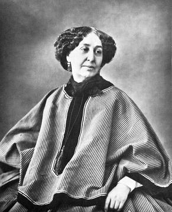

Cuốn sách này xuất bản trong khuôn khổ « Chương trình hợp tác xuất bản, đưọc sự giúp đỡ của Trung tâm Văn hóa và Hợp tác Đại sứ quán Pháp tại nước Cộng Hoà Xã Hội Chủ nghĩa Việt Nam
( Cet ouvrage, publié dans le cadre du Progamme de participation à la publication, bénéficie du soutien du Centre Culturel et de Coopération de l’Ambassade de France en République Socialiste du Vietnam)
Béatrice Didier là một giáo sư trường Đại học Sư phạm ( Phố Uhm, Paris) ; tác giả của nhiều tiểu luận ( Nhật ký thầm kín, văn viết - phụ nữ… ) về văn học Pháp thế kỷ XVII và thế kỷ XIX, đặc biệt về Stendhal và George Sand.
Năm 1998 bà đã xuất bản ở PUF một tác phẩm, đầu đề lấy nguồn cảm hứng từ Flaubert: George Sand. Một giòng sông lớn châu Mỹ.
bà là người chủ trì việc xuất bản toàn tập George Sand ở Honoré Champion, một công việc từ trước tới nay chưa bao giờ được thực hiện.
George Sand
«Với tư cách người sáng tạo ra kiệt tác, bà là người thứ nhất trong giới phụ nữ, bà có thứ hạng độc nhất đó, trên phương diện nghệ thuật, không phải chỉ của thời đại chúng ta mà của mọi thời đại; bà có trí tuệ mạnh mẽ nhất và cũng đáng yêu nhất đã được trao tặng cho giới của bà. Thưa Bà, bà làm vẻ vang cho thế kỷ và cho đất nước chúng ta […]
Tôi xin cảm tạ bà vì đã là một tâm hồn lớn lao đến thế”.
VICTOR HUGO,
Thư gửi George Sand,
Paris 19 tháng sáu năm 1875
Beatrice Didier là giáo sư trường Đại học Sư phạm (phố Uhm, Paris); tác giả của nhiều tiểu luận (Nhật ký thầm kín, Văn viết - phụ nữ...) về văn học Pháp thế kỷ XVII và thế kỷ XIX, đặc biệt về Stendhal và George Sand. Năm 1998 bà đã xuất bản ở PUF một tác phẩm, đầu đề lấy nguồn cảm hứng từ Flaubert: George Sand. Một giòng sông lớn châu Mỹ. Bà là người chủ trì việc xuất bản toàn tập George Sand ở Honoré Champion, một công việc từ trước tới nay chưa bao giờ được thực hiện.
Ai sợ George Sand? Các phản ứng khó thương của một Baudelaire có lẽ là bắng chứng rõ ràng nhất về nỗi lo âu do bà gây nên. Trong một thời gian dài người phụ nữ - tác giả đã khiến người ta sợ, đặc biệt nếu người ấy chẳng chịu thôi làm phụ nữ. Ngay từ đầu vinh quang của bà đã có vầng hào quang tai tiếng bao quanh.

.
Điều này có vẻ đáng ngạc nhiên, bởi rốt cuộc thì trong thế kỷ XVIII của chúng ta, đông đảo nữ văn sĩ từng có tình nhân ; nhưng giữa thời gian ấy đã diễn ra cuộc Cách mạng, rất ít chú ý đến nữ quyền, cần phải thừa nhận như vậy: sau đó nền Đế chế, thời Trùng Hưng và triều đại Louis –Philippe biểu thị bước thoái bộ rất rõ trong việc giải phóng phụ nữ. Và dư luận công chúng, ở thế kỷ XIX, với sự phát triển của báo chí, các phương tiện trung gian để làm rùm beng vụ tai tiếng, những phương tiện mà thế kỷ trước không có. Trong một thời gian dài nền phê bình văn học, chịu ảnh hưởng của dư luận này, cứ khăng khăng thấy George Sand là người tình của Musset hay của Chopin, thay vì thấy bà là một đại văn hào, như chúng ta hiện nay. Điều đó lý giải tình trạng tương đối thất sủng của sáng tác George Sand. Tuy nhiên, sinh thời bà, một Balzac, một Flaubert và nhiều bậc khác coi bà là đồng đẳng với mình.
Tại nước ngoài ảnh hưởng của bà hết sức lớn lao, thí dụ như với Dostoievski và với tiểu thuyết Nga, cả với tiểu thuyết Ý. Bà từng được việndẫn bởi tất cả những phụ nữ nhìn thấy ở bà một ngưòi giải phóng.
Trong những năm đầu thế kỷ XX, Alaine và đặc biệt Marcel Proust coi bà là một đại văn hào. Sau đó, nhờ nhiều công trình từng in dấu ở nửa sau thế kỷ, hình ảnh của George Sand và công trình của bà đã định hình rõ rệt. Trước hết chúng ta hãy tỏ bày niềm kính trọng đối với việc xuất bản Thư Tín do Georges Lubin phụ trách, gồm hai mươi sáu tập dày, cho phép chúng ta xem xét cuộc sống của George Sand ngày này qua ngày khác, cuộc sống khác hẳn với những sự đơn giản hóa mà bà là nạn nhân, cho ta thấy khả năng làm việc khó tin nổi và theo dỏi công việc sáng tác của bà trong những nét lớn. Chúng ta cũng lưu ý cả nỗ lực đã được thực hiện trong lĩnh vực xuất bản, tuy vẫn còn chưa đủ. Cho đến nay chưa nhà xuất bản nào ấn hành một bộ tổng tập: Honoré Champion là nhà xuất bản đầu tiên khởi sự công trình này, sẽ phải được tiến hành trong nhiều năm. Các trường đại học đã đi vào nghiên cứu văn hào một cách nghiêm túc: trường Đại học Grenoble, với các công trình của..Cellier và L.Guichard, được học trò của các ông tiếp nối, trường Đại học Vérone, với A. Poli, các trường Đại học Paris VII, Amsterdam, Hanovra, các trường Đại học Mỹ … Tuy vậy vẫn còn rất nhiều việc cần làm.
Tiểu thuyết của George Sand, được viết với sự dung dị mà người ta thường chê trách bà, dễ đọc ; tuy nhiên nắm bắt toàn thể công trình của bà lại khó, trước hết do tầm rộng lớn của nó. Rất hiếm người có thể tự phụ là đã đọc chín mươi cuốn tiểu thuyết, các tác phẩm tự thuật, kịch, các bài báo, thư từ trao đổi của bà: giá như muốm làm, phải bỏ vào đó cả cuộc đời. Cho nên người ta thích tái bản những gì tất cả mọi người đều biết, thí dụ như các tiểu thuyết gọi là « đồng nội », và bỏ qua phần kịch, bị đánh giá nhầm lẫn là khó diễn. Tự giới hạn ở vài hình ảnh về George Sand do các thế hệ trước truyền lại thì dễ hơn: người đàn bà định mệnh, rồi « bà phu nhân hiền hậu của Nohant ».
Trong chừng mực bà từng gây ra và còn đang gây ra những cách lý giải say sưa sôi nổi, lại cũng khó có được một cái nhìn tương đối khách quan và đừng phóng chiếu lên bà các sơ đồ của thế kỷ XXI chúng ta. George Sand nhà đấu tranh vì phụ nữ ư? Một số người sẽ cho rằng bà đấu tranh chưa đủ. Sáp nhập bà với các nhà đấu tranh vì phụ nữ những năm 1970 là một việc làm nguy hiểm: sự giải phóng phụ nữ mà bà yêu cầu xét cho cùng khá hạn chế, khi sẵn sàng chấp nhận là những người phụ nữ thuộc mọi đẳng cấp xã hội không có cùng một phận vị. Nhưng cần đặt cuộc đấu tranh của bà vào thời đại bà, chứ không phải thời đại chúng ta. Georges Sand xã hội chủ nghĩa, bạn của Pierre Leroux, ủng hộ 1848, thậm chí tham gia hoạt động trong đó? Nhưng người ta sẽ thấy chủ nghĩa xã hội ấy là rụt rè, người ta sẽ chê trách thái độ của bà trong thời kỳ Công xã. Cả ở đây nữa, cũng cần xác lập lại các viễn cảnh: năm 1848 và năm 1871 tuổi bà đã khác đi: bà đã sống ngày này qua ngày khác những biến cố mà chúng ta biết một cách tổng quát và theo phương pháp quy nạp, đối với những biến cố đó chúng ta có thể có một cách nhìn khác với những người đương thời.
Một điều cũng gây khó nghĩ, đó là trong cuộc sống thọ của bà, George Sand đã tự đổi mới, đã ứng dụng những thể loại rất khác biệt và thật khó đưa bà vào các phạm trù đã định giới hạn. Bà từng được một công chúng hết sức rộng rãi đọc trong suốt thế kỷ XIX. Bà có là nhà sáng tạo những hình thức mới hay không? Nhiều hơn người ta nghĩ. Bà có quan tâm đến bút pháp, hay như người ta từng khẳng định, bà viết những gì lướt qua óc mình? Việc nghiên cứu các bản thảo chứng tỏ rằng, dù không chữa kỹ lưỡng như một Flaubert, song bà dụng công, chỉnh sửa, nâng cao, hơn người ta thường bảo rất nhiều.
Các bạn đã đọc George Sand chưa? Cuốn sách nhỏ này muốn xui bạn hãy làm điều đó và đặc biệt là hãy phiêu lưu ngay (nếu việc đọc toàn bộ hầu như bất khả thực hiện) đến với những tác phẩm ít nổi tiếng hơn. Như thế bạn sẽ có được một khái niệm về sự phong phú, về tính đa dạng, về chất quảng đại trong văn chương của người được Flaubert ví với “một dòng sông lớn châu Mỹ”. Chú ý đến tác phẩm hơn là cuộc đời, chúng tôi sẽ theo trật tự thời gian trên những nét lớn, nhưng đồng thời có những tập hợp về thể loại để giúp nắm bắt đồng thời cả tính phức hợp cả sự nhất quán của công trình.